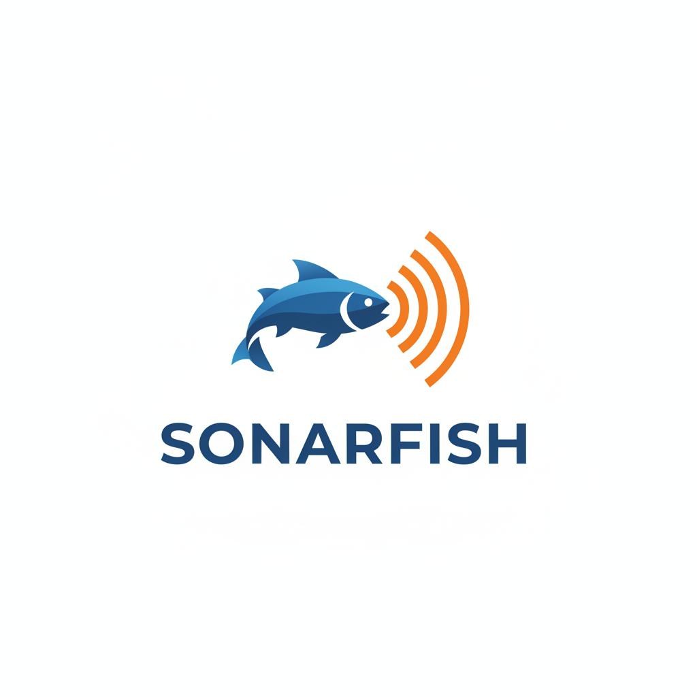

Sonarul SONARFISH este soluția perfectă pentru pescarii care vor să pescuiască inteligent și eficient. Te ajută să localizezi rapid bancurile de pești și transformă pescuitul într-o activitate modernă și distractivă.

Funcționalități principale
- Determinarea adâncimii apei și a reliefului lacului
- Identificarea bancurilor de pești în timp real
- Interfață intuitivă și ușor de folosit
- Compatibil cu orice baltă sportivă
Tarife și abonamente
Tarife orientative:
- 100 lei/oră
- 350 lei/zi
- Abonament lunar: 3 ieșiri + 1 gratuită